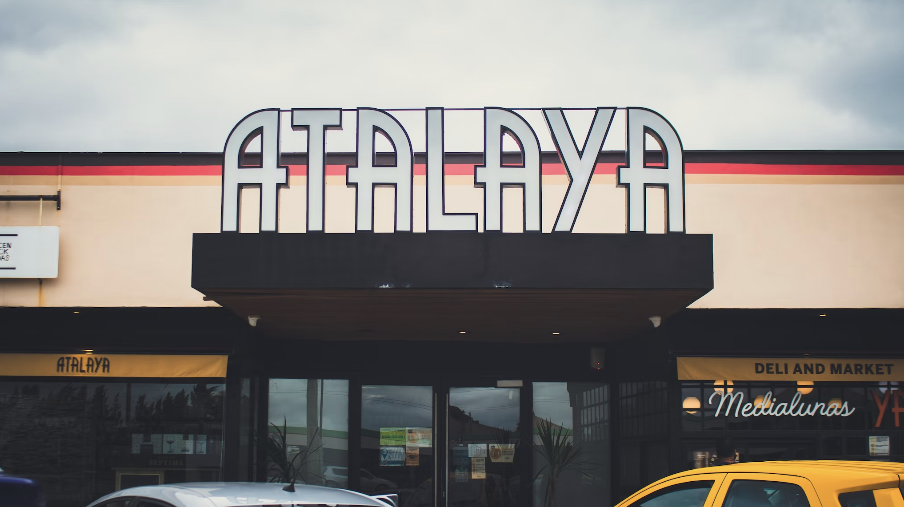

parador atalaya
Fundada en el año 1942, en la ciudad de Chascomús, el Parador Atalaya surge como una empresa familiar dedicada a la elaboración artesanal de sus productos, rasgo que se ha mantenido a través del tiempo y que hoy constituye parte de su identidad.
Por tal motivo el Parador Atalaya se ha convertido en cita obligada, lugar de descanso y punto de encuentro de muchas generaciones de argentinos que hacen un alto en su viaje para disfrutar, ya sea de las clásicas medialunas acompañadas del tradicional café o de la gran variedad de productos que ofrece.
La empresa, de un tiempo a esta parte, se ha fijado como meta ampliar sus fronteras y ofrecer a sus clientes una nueva experiencia, sin por ello perder de vista el valor de lo autóctono como símbolo de pertenencia.
Sitio web oficial del Parador Atalaya